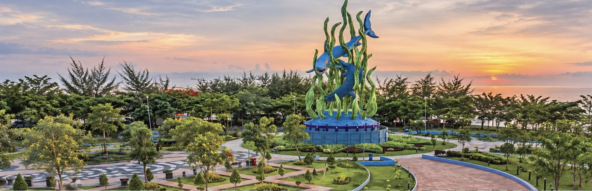
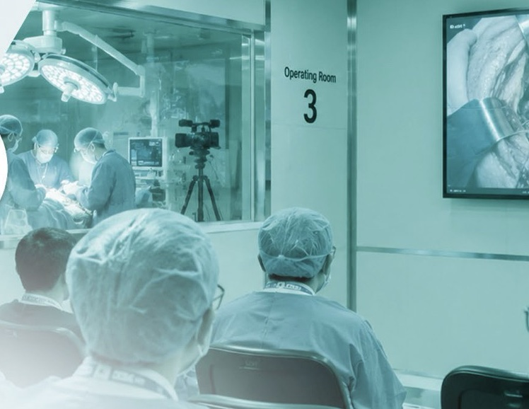
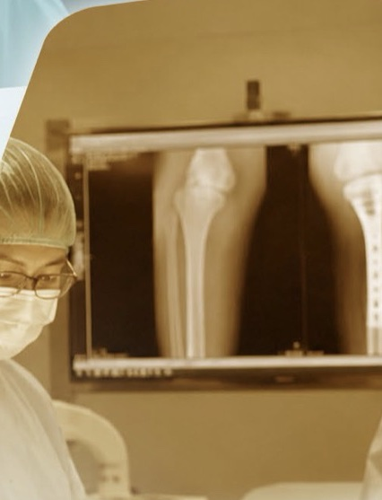
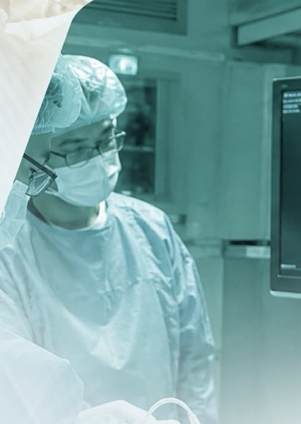

Indonesian Orthopaedic Spine Surgeon Association
Spine


Yok Opo Cak ?!
East Javanese for “How are you, brother?!” – loud, warm, and the way old friends greet each other here.
On behalf of the Organizing Committee, it is our great pleasure to welcome you to the Orthopaedic Concurrent Meeting 2027, taking place on 11–14 August 2027 at The Westin Surabaya and the Academic Hospital, Universitas Airlangga.
This 2nd meeting marks a historic milestone for the Indonesian Orthopaedic Association (PABOI). For the first time, four affiliated organizations – IOSSA, IOPIS, IOTS and IOMBS – join forces to organize a national-scale event, with internationally renowned faculty sharing their knowledge and experience.
The meeting will feature internationally renowned experts who will share their knowledge, insights, and experience. Their participation offers an opportunity to learn from global leaders, exchange ideas, and build professional networks with colleagues and experts from the international orthopaedic community.
This collaboration reflects our shared commitment to unity, scientific advancement, and the improvement of orthopaedic care in Indonesia. We hope the scientific sessions, discussions, presentations, and supporting activities will inspire new ideas, strengthen cooperation across subspecialties, and contribute to better patient care.
Beyond the scientific programme, we invite you to experience the warmth and distinctive character of Surabaya and East Java. The people of East Java are known for being outspoken, straightforward, expressive, and spirited. Their loud way of speaking and seemingly rough, informal greetings are often signs of familiarity and genuine closeness rather than disrespect. Behind this bold communication style is a warm-hearted culture that values sincerity, solidarity, and togetherness.
We also encourage you to discover Surabaya, the City of Heroes, enjoy its local cuisine, and explore East Java’s natural beauty, from captivating coastlines to breathtaking mountain scenery.
May this meeting bring valuable knowledge, lasting connections, and new collaborations. We wish you a productive and enjoyable experience, and memories during your stay.
We look forward to welcoming you to Surabaya!
Spine
Pain intervention
Trauma · this year on geriatric trauma
Mechanobiology & regenerative medicine
Two days of hands-on workshops at the Academic Hospital, then two days of concurrent scientific lectures – one hall for each society – at The Westin Surabaya.
Detailed timetable and faculty list will be published closer to the meeting. SKP credits for each scientific programme will be announced soon.
Held at the Academic Hospital, Universitas Airlangga. Exclusively for Sub-Specialists and Clinical Fellows. SKP Kemenkes accredited.

3 days of APSS certified workshops – Spine
10 – 12 August 2027 · symposium 13 – 14 August
Watch the live surgery from inside the operating room + IDR 5,000,000

Cadaveric Workshop
Wednesday, 11 August 2027

Cadaveric Workshop
Wednesday, 11 August 2027
2 Days of Scientific Lecture · 13 – 14 August 2027 · The Westin Surabaya
| Category | Earlyuntil 30 June 2027 | Regular1 July – 14 August 2027 | Register |
|---|
Book your room together with your registration – choose it as an add-on on the registration form.
Main venue hotel
Partner hotel
11 – 12 August
Live surgery and cadaveric workshops – Spine, Trauma, Pain Intervention.
Open in Maps13 – 14 August
Scientific lectures (Ballroom 2, 3A, 3B, 3C), paper & poster, interactive course, exhibition and gala dinner.
Open in MapsSecretariat Office
Indonesian Orthopaedic Association (PABOI)